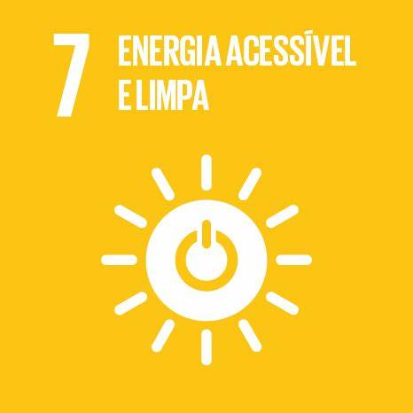
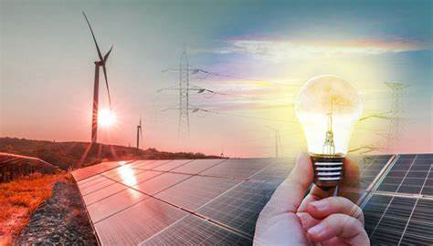
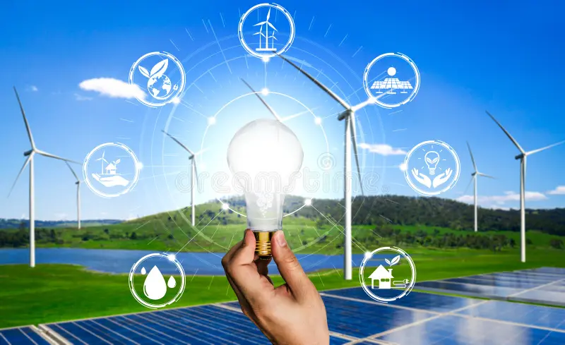
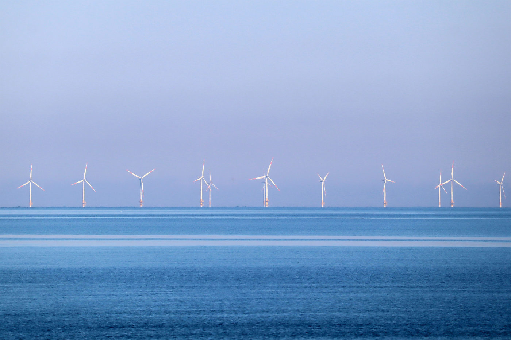
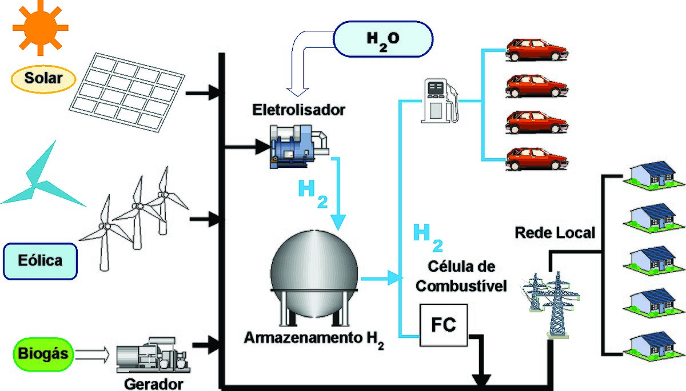

TIPOS DE ENERGIA
Hidraulica
A hidreletricidade é obtida pelo aproveitamento do movimento da água dos rios. A energia elétrica assim obtida é uma fonte não poluente e renovável. Os maiores impactos ambientais ocorrem na construção da usina hidrelétrica, com o represamento da água. Entre os países que mais produzem hidreletricidade estão Canada, Brasil e China.
Eólica
É uma fonte de geração limpa, renovável, autóctone e inesgotável que se obtém ao transformar em eletricidade a energia cinética do vento. Pode ser de dois tipos, em função de onde estiverem os aerogeradores:
Energia eólica onshore: aproveita as correntes de ar produzidas na terra.
Energia eólica offshore: aproveita a força do vento que se produz em alto mar, onde este atinge uma velocidade superior e mais constante.

Solar
Energia solar é uma fonte de energia limpa e barata. Sua utilização não traz danos para o ambiente e representa uma opção bastante viável. As estações de captação ou painéis solares de energia já são usados amplamente para o aquecimento de água e a obtenção de eletricidade em diversos países, entre eles, Israel, França e Estados Unidos
Biomassa
A energia da biomassa é obtida através de tecnologias que permitem converter em energia uma variedade de produtos como plantas, excrementos, madeira, resíduos agrícolas e até o lixo. Os produtos são transformados em energia, por meio de combustão, gaseificação, fermentação ou na produção de substâncias líquidas. A biomassa pode ser convertida em eletricidade, calor e combustíveis. No Brasil, a cana de açúcar é utilizada para produção do etanol.

Geometrica
É um tipo de energia limpa, renovável, autóctone e inesgotável que aproveita o calor que irradia o centro da Terra mediante usinas situadas em jazidas. Estas jazidas podem ser de água quente (se o calor procede de camadas de água quente que circulam debaixo da superfície) ou secas (calor que provém das pedras).
Dos oceanos
A energia dos oceanos consiste na transformação da energia contida nas ondas do mar em energia elétrica. É uma energia limpa e renovável, já empregada em Portugal, Reino Unido, Japão e Noruega.
Energia do hidrogênio
A energia do hidrogênio é obtida da combinação do hidrogênio com o oxigênio, produzindo vapor de água e liberando energia que é convertida em eletricidade. Já existem protótipos de carros movidos a hidrogênio.